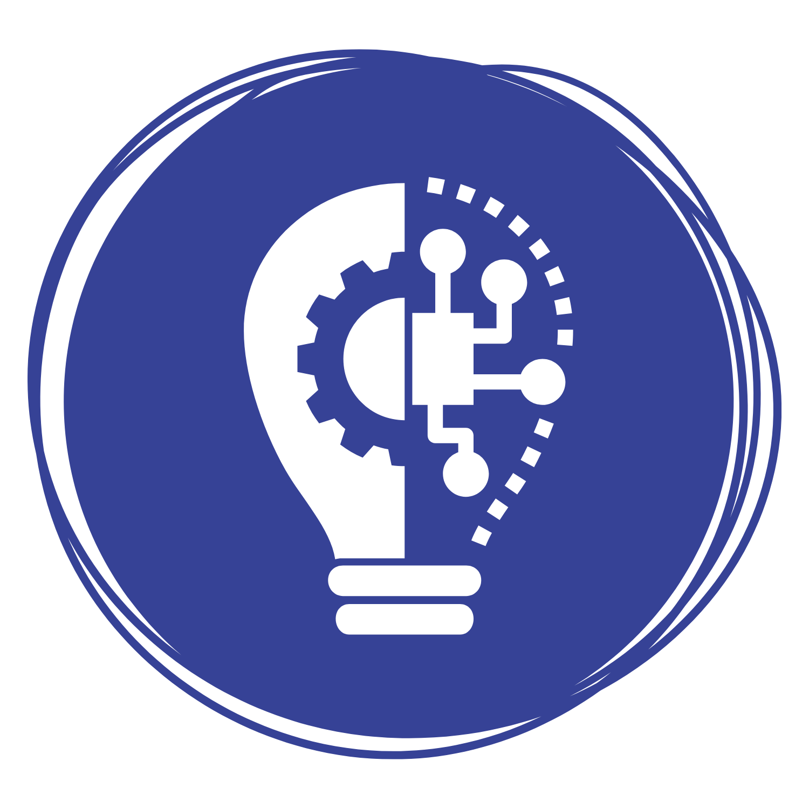
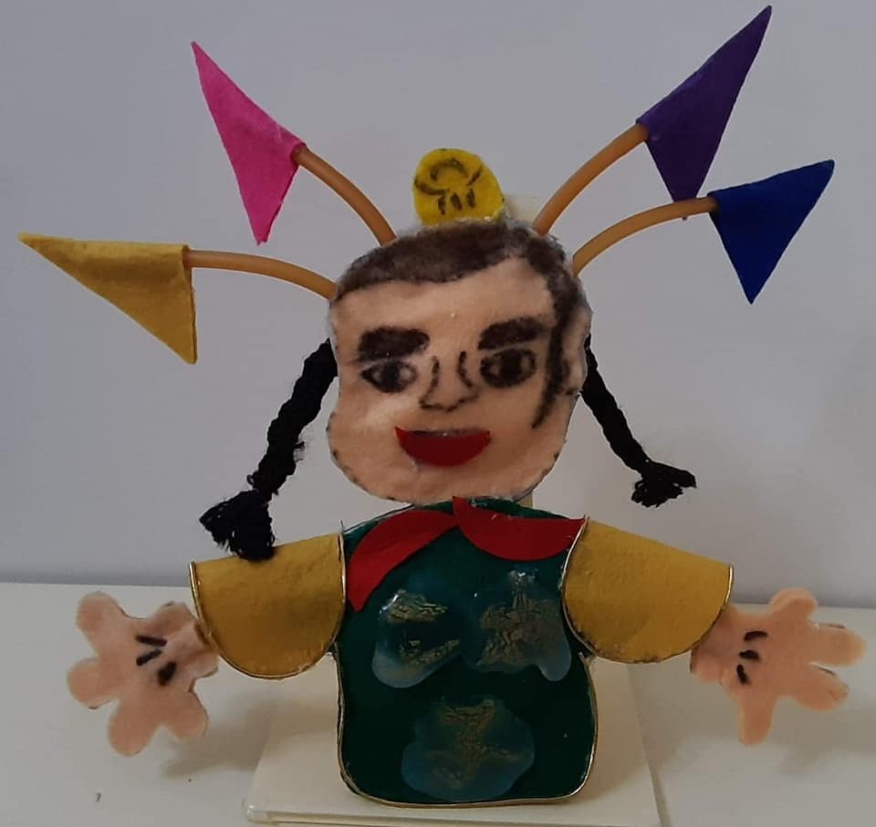

micro:bit Maker & Educator
Eric’s Portfolio
記錄 2018–2021 年間的 micro:bit 創客作品、硬體實驗、教學助教與展覽經歷。


作品集micro:bit Portfolio
 2021.01
2021.01
遙控喇叭
Remote Control Speaker
吵鬧及學校靜坐要領提醒器，整合 KSB048、DFplayerMini 與 21 鍵紅外線遙控器。
 2020.12
2020.12
分貝檢測計
Decibel Detector
使用 micro:bit 偵測環境音量分貝變化並即時顯示提示。
 2020.03
2020.03
🌟酒精機器人
Alcohol Dispenser Robot
超音波感應自動噴灑酒精機器人，歷經積木 1.0、免洗筷 2.0 到 3D 列印 3.0 迭代。
 2019.07
2019.07
比基號
Biki
為文山教育基金會 micro:bit 廢材機器人營快速製作給學員參考的範例作品。
 2019.04
2019.04
體感功夫
Somatosensory KungFu
結合 micro:bit 加速度感測器的體感功夫互動作品。
 2018.11
2018.11
十點半
Poker
在 micro:bit 上實現的經典「十點半」撲克牌互動小遊戲。

2018.11哪吒三太子
Nezha The Third Prince
以伺服馬達控制呈現電音三太子搖擺動作的創意作品。
 2018.10
2018.10
白鋼琴
The White Piano
以曬衣夾、冰棒棍、鋁箔紙與鐵絲製作導電琴鍵，曾參展 2018 台北創客嘉年華。